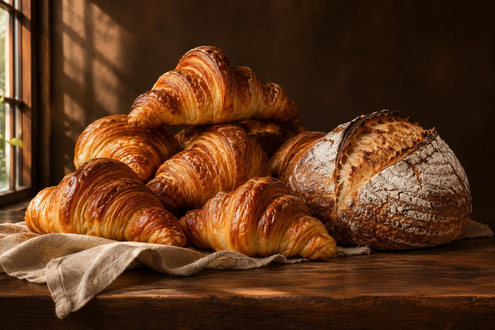

NEIGHBORHOOD BAKERY
겹겹이 바삭한 크루아상과 천천히 발효한 사워도우.하루의 첫 빵을 브레드 컴퍼스에서 만나보세요.

THE BREAD COUNTER
얇고 바삭한 결 사이로 고소한 버터 향이 퍼집니다.
단단한 껍질과 촉촉한 속, 은은한 산미를 담았습니다.
바삭한 반죽 위에 제철 과일 잼을 올립니다.
먹어 본 빵의 후기, 메뉴에 대한 질문, 다음에 만나고 싶은 빵을 남겨주세요.
VISIT US
주소, 영업시간, 휴무일과 연락처는 매장 정보가 확정되면 안내합니다.